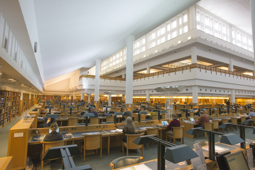

About The Community Library
120 Locations: in New York City
Patience and Fortitude for All New Yorkers
Patience and Fortitude for All New Yorkers
Since its founding in 1995, The Community Library has unwaveringly served New York City, no matter the circumstances. The COVID-19 pandemic brought forth unprecedented challenges for our city and our patrons. But as it has always done, the Library quickly adapted to ensure communities could still access the information and resources they needed. While constantly monitoring the rapidly changing circumstances, the Library increased its core digital services—from e-book access to online learning support for students, remote research services, online programs, and virtual one-on-one job support. And as soon as it could, the Library reopened all available branch locations across the Bronx, Manhattan, Queens, Brooklyn and Staten Island in phases to ensure that New Yorkers could access the services and resources they rely on.
The Library was founded on the ideals of free and open access to knowledge and opportunity for everyone. The challenges of 2020 and 2021 did not deter, but rather reaffirmed NYPL’s central objective to serve New Yorkers through even the most turbulent times—a testament to the enduring legacy of the Library as one of the city’s most essential civic institutions.